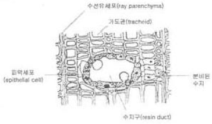
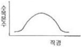

산림기사 (2011-08-21 기출문제)
1과목: 조림학
1. 목부 조직의 횡단면이 그림과 같은 형태를 보이는 수종은?

- 소나무
- 신갈나무
- 아까시나무
- 층층나무
(정답률: 89%)

2. 조림지의 풀베기 작업에 대한 설명으로 옳은 것은?
- 모두베기는 음수를 조림한 지역에서 실시한다.
- 풀베기 작업의 시기는 9월이 적기이다.
- 전나무 조림지에 대한 풀베기 작업은 조림 후 2년 이내에 종료하는 것이 바람직하다.
- 한풍해가 심하게 우려되는 조림지에서의 풀베기 작업은 둘레베기 방법을 적용하는 것이 바람직하다.
(정답률: 85%)
3. 미생물의 활동이 대단히 왕성하고 양료의 이용률이 높으며 부식의 형성이 쉽게 되는 토양의 pH 범위는?
- pH3.4 이하
- pH5.0~5.5
- pH6.5~7.0
- pH8.0~8.5
(정답률: 84%)
4. 난대 수종으로 일반적으로 온대 중부 이북에서 조림하기 어려운 수종은?
- 잣나무
- 전나무
- 물푸레나무
- 붉가시나무
(정답률: 84%)
5. 묘포에서 실생묘 양성을 위하여 일반 품질의 소나무 종자를 파종할 때 1m2당 파종량의 범위는?
- 5~10 g
- 10~15 g
- 20~30 g
- 40~50 g
(정답률: 53%)
6. 임목밀도에 대한 설명으로 옳은 것은?
- 밀도가 높을수록 총생산량 중 가지가 차지하는 비율이 높아진다.
- 밀도는 직경생장보다 수고생장에 큰 영향을 주지만 단목의 재적생장은 같다.
- 밀도가 높을수록 단목의 생활력은 약해지나 임분의 안정성은 높아진다.
- 밀도가 높으면 직경은 작지만 완만재가 되고, 밀도가 낮으면 직경은 크지만 초살형이 된다.
(정답률: 76%)
7. 점토가 미사나 모래의 함량보다 상대적으로 많은 식토의 특성을 잘못 설명한 것은?
- 식토는 일반적으로 사토에 비하여 양이온치환용량(C. E. C)이 높다.
- 식토는 사토에 비하여 보습력이 높다.
- 토양수분함량이 낮아질 때 식토는 거북등처럼 갈라지나 사토는 그렇지 않다.
- 식토는 일반적으로 사토보다 식물의 뿌리발달에 좋다.
(정답률: 77%)
8. 꽃의 구조와 열매의 구조 사이의 관계를 연결한 것중 옳지 않은 것은?
- 배주 → 종자
- 주심 → 내종피
- 난핵 → 배유
- 자방 → 열매
(정답률: 73%)
9. 임목의 직경분포가 다음 그림과 같이 정규분포를 나타내는 것은?

- 보잔목 임형의 직경분포
- 택벌림의 직경분포
- 이령림의 직경분포
- 동령림의 직경분포
(정답률: 80%)
10. 다음 중 삽목발근이 가장 잘되는 수종은?
- 느티나무
- 상수리나무
- 소나무
- 버드나무
(정답률: 58%)
11. 수목의 체내 이동이 어려워 생장점이나 어린 잎 등 세포분열이 일어나는 곳에서 결핍증상이 잘 나타나는 무기양료 만으로 나열되어 있는 것은?
- 질소, 칼슘, 칼륨
- 칼슘, 철, 붕소
- 철, 망간, 마그네슘
- 구리, 마그네슘, 질소
(정답률: 73%)
12. 밤나무 접목묘를 묘간거리 4m, 열간거리 5m로 식재하고자 한다. 1ha에 소요될 묘목의 본수는? (단, 수량 할증을 25% 고려한다.)
- 400주
- 500주
- 625주
- 1000주
(정답률: 57%)
13. 침엽수 인공림의 수형목 지정기준 중 옳지 않은 것은?
- 상층 임관에 속할 것
- 지하고가 낮을 것
- 밑가지들이 말라서 떨어지기 쉽고 그 상처가 잘 아물 것
- 주위 정상목 10본의 평균보다 수고 5%, 직경 20% 이상 클 것
(정답률: 77%)
14. 종자의 활력 검정방법이 아닌 것은?
- 절단법
- 환원법
- X선분석법
- 양건법
(정답률: 73%)
15. 수목은 토양의 무기양료가 부족하면 여러 가지 생리반응이 나타난다. 부족했을 때 잎의 황화현상(chlorosis)을 일으키는 무기양료가 아닌 것은?
- N
- Mg
- Fe
- Cl
(정답률: 57%)
16. 비료목에 대한 설명으로 옳은 것은?
- 비료목을 식재할 경우에는 인위적인 시비를 하지 않아야 한다.
- 균근균이 공생하는 수종은 비료목이 될 수 없다.
- 비료목은 항상 주임목(主林木)을 식재하기 이전에 먼저 식재되어야 한다.
- 싸리류나 아까시나무 등과 같은 콩과식물은 질소고정균이 공생하기 때문에 비료목으로 적합하다.
(정답률: 80%)
17. 택벌작업의 장점을 옳게 설명한 것은?
- 양수 수종의 갱신에 적당하다.
- 임목벌채가 쉬워 치수에 손상을 주지 않는다.
- 일시벌채량이 많아 경제상, 효율적이다.
- 소면적 임지에 보속생산을 하는데 가장 알맞은 방법이다.
(정답률: 75%)
18. 작업종과 후계림의 산림형태가 옳게 연결된 것은?
- 개벌작업 – 이령림
- 산벌작업 – 일제림
- 택벌작업 – 동령림
- 저림작업 – 용재생산림
(정답률: 56%)
19. 개화 당년에 종자가 결실하는 수종으로 묶어진 것은?
- 소나무, 회양목
- 상수리나무, 해송
- 떡갈나무, 오동나무
- 잣나무, 버드나무
(정답률: 57%)
20. 우리나라는 산림 자원의 조성에 어려움이 많다. 다음 중 산림 자원 조성의 문제점에 해당되지 않는 것은?
- 봄철에 기후가 건조하다.
- 경사가 급해서 숲의 흙이 안정되기 어렵다.
- 천연림이 발달되어 있다.
- 여름철 폭우는 산악 지대의 흙을 침식시킨다.
(정답률: 87%)
2과목: 산림보호학
21. 천연보호림을 지정⋅해제할 수 있는 사람이 아닌 것은?
- 지방산림청장
- 광역시장
- 도지사
- 군수
(정답률: 82%)
22. 대추나무 빗자루병의 병원은?
- 바이러스
- 세균
- 균류
- 파이토플라스마
(정답률: 91%)
23. 다음 중 기주교대를 하지 않는 병원균은?
- 소나무 잎떨림병균
- 배나무 붉은별무늬병균
- 잣나무 털녹병균
- 소나무 혹병균
(정답률: 57%)
24. 솔수염하늘소의 설명 중 맞지 않는 것은?
- 소나무재선충을 전파한다.
- 유충으로 월동한다.
- 성충의 우화시기는 5월 하순~7월 상순이다.
- 남부지방에서는 연 2회 발생한다.
(정답률: 75%)
25. 다음 중 우리나라에서 발생하기 힘든 산불 형태는?
- 지중화(地中火)
- 지표화(地表火)
- 수간화(樹幹火)
- 수관화(樹冠火)
(정답률: 75%)
26. 최근 우리나라 소나무와 잣나무에 피해를 주는 소나무재선충병의 매개충으로 짝지어진 것은?
- 알락하늘소, 광릉긴나무좀
- 솔수염하늘소, 북방수염하늘소
- 솔수염하늘소, 털두꺼비하늘소
- 알락하늘소, 불방수염하늘소
(정답률: 89%)
27. 다음 중 병환부에 표징이 나타나지 않는 병원체는?
- 불완전균
- 자낭균
- 담자균
- 바이러스
(정답률: 67%)
28. 소나무 시들음병을 일으키는 소나무재선충이 나무와 나무사이를 이동하는 경로는?
- 종자전염
- 매개충
- 바람
- 토양전염
(정답률: 88%)
29. 우리나라에 서식하고 있는 포유류 중 천연기념물이 아닌 것은?
- 수달
- 물범
- 호랑이
- 하늘다람쥐
(정답률: 80%)
30. 임분구성을 통해 풍부한 야생동물군집을 형성하기 위한 방법에 해당하지 않는 것은?
- 택벌시업
- 혼효림의 복층화
- 침엽수 인공림내의 활엽수 도입
- 혼효림의 순림유도 작업
(정답률: 79%)
31. 해충에 대한 설명 중 맞는 것은?
- 솔나방은 소나무를 주로 가해하지만 활엽수도 가해하는 잡식성 해충에 속한다.
- 소나무재선충을 매개하는 곤충은 솔수염하늘소, 울도하늘소 등이 알려져 있다.
- 솔잎혹파리는 충영을 형성하는 해충이나 밤나무순혹벌은 충영을 만들지 않는다.
- 미국흰불나방은 1958년에 침입한 해충으로, 잎을 가해한다.
(정답률: 76%)
32. 수목 뿌리혹병(crown gall) 세균의 침입장소로 가장 거리가 먼 것은?
- 지하부의 접목 부위
- 삽목의 하단부
- 뿌리의 절단면
- 뿌리의 기공
(정답률: 72%)
33. 천적에 대한 피해가 가장 적은 살충제는?
- 침투성 살충제
- 소화 중독제
- 접촉제
- 훈증제
(정답률: 74%)
34. 송이풀과 까치밥나무류를 중간기주로 하는 수목병은?
- 잣나무 털녹병
- 소나무 시들음병
- 그을음병
- 붉은별무늬병
(정답률: 90%)
35. 밤나무 줄기마름병의 방제 방법과 가장 거리가 먼 것은?
- 동해 및 상해에 주의한다.
- 줄기를 침해하는 해충을 구제한다.
- 중간기주 식물을 제거한다.
- 저항성 품종을 심는다.
(정답률: 74%)
36. 암컷만으로 단성생식을 하는 대표적인 해충은?
- 솔잎혹파리
- 밤나무혹벌
- 소나무좀
- 솔나방
(정답률: 77%)
37. 모잘록병에 대한 설명 중 잘못 설명된 것은?
- 묘상의 배수를 철저히 하여 과습을 피하고 통기성을 좋게 하는 것이 좋은 방제법 중의 하나이다.
- 묘목이 생장하여 목질화가 진행된 여름 이후에 뿌리가 갈색으로 변하여 부패하는 것은 근부형이다.
- 이 병은 침엽수 중에서 소나무류, 낙엽송, 가문비 나무 등의 묘목에 많이 발생한다.
- 이 병의 예방을 위해서는 파종량을 많게 하며, 질소질 비료를 많이 주는 것이 좋다.
(정답률: 91%)
38. 다음 중에서 기주를 교대하며 발생하는 병이 아닌 것은?
- 삼나무 붉은마름병
- 향나무 녹병
- 소나무 혹병
- 포플러 잎녹병
(정답률: 63%)
39. 다음 중 우리나라에 분포하지 않는 겨우살이 종류는?
- 붉은겨우살이
- 참나무겨우살이
- 소나무겨우살이
- 동백나무겨우살이
(정답률: 60%)
40. 씹는 입들을 가진 해충류의 방제에 주로 사용되는 살충제는?
- 기피제
- 제충제
- 소화중독제
- 훈증제
(정답률: 91%)
3과목: 임업경영학
41. 재적 0.6m3 인 통나무 2본의 가격보다 재적 1m3인 통나무 한 본의 가격이 훨씬 높다. 그 이유를 가장 잘 나타낸 것은?
- 재적생장
- 등귀생장
- 가치생장
- 형질생장
(정답률: 75%)
42. 미국의 목재재적 단위인 보드푸트(b.f)란?
- 폭, 길이 각각 1푸트, 두께 1인치의 재적
- 폭, 길이 각각 1인치, 두께 1푸트의 재적
- 폭 1인치, 길이와 두께 각각 1푸트의 재적
- 길이 1인치, 폭과 두께 각각 1푸트의 재적
(정답률: 62%)
43. 여가의 특성이 아닌 것은?
- 자유시간
- 자유 및 내적 만족 강조
- 개인 목적 우세
- 재생, 사회 편익 강조
(정답률: 83%)
44. 휴양을 보는 관점의 설명 중 마슬로(Maslow)의 인간 동기와 가장 관련이 깊은 것은?
- 욕구충족으로서의 휴양
- 여가 시간으로서의 휴양
- 개인적, 사회적 가치로서의 휴양
- 재창조로서의 휴양
(정답률: 77%)
45. 재적수확 최대의 벌기령과 밀접한 관계가 있는 것은?
- 정기생장량
- 총평균생장량
- 연년생장량
- 정기평균생장량
(정답률: 60%)
46. 관리회계에서 다루고 있는 문제 중에서 가장 기본적인 문제는 실제로 발생한 원가를 집계하는 일인데 일반적으로 여러 경영 목적을 위하여 실제원가를 결정하는 과정을 무엇이라 하는가?
- 표준원가
- 원가표준
- 원가계산
- 원가차이
(정답률: 69%)
47. 소나무림 40년생의 임목 재적 100m3를 매각하려고 한다. 소나무 임목 이용율은 70%로, 1m3당 평균원목시장가격은 60000원, 조재비는 10000원, 집재⋅운재비가 20000원이고 이율이 4%, 자본회수 기간이 4개월일 때 소나무림의 임목가는 얼마인가?
- 약 156만원
- 약 154만원
- 약 152만원
- 약 150만원
(정답률: 45%)
48. 산림가격형성에 미치는 요인을 개별적요인과 지역적요인으로 구분한다면, 지역적요인(외적요인)에 포함 할 수 있는 것은?
- 지위
- 노동력 확보의 용이성
- 임종
- 혼효율
(정답률: 71%)
49. 임업경영비를 바르게 표현한 것은?
- 임업조수익 – 임업경영비
- 임업현금지출 + 감가상가액 + 미처분 임산물재고 감소액 + 임업생산 자재재고감소액 + 주임목감소액
- 임업현금수입 + 임산물가계소비액 + 미처분임산물 증감액 + 임업생산 자재재고증감액 + 임목성장액
- 임업소득 - (자본이자 + 가족노임추정액)
(정답률: 71%)
50. 말구직경 24cm, 원구직경 34cm, 재장이 4m 인 통나무의 재적을 스말리안(Smalian)식에 의하여 구하면 얼마인가?
- 0.272 m3
- 0.292 m3
- 0.302 m3
- 0.252 m3
(정답률: 53%)
51. 대학 학술림 관리소 건물의 장부원가가 5000만원이고, 폐기할 때의 잔존가치가 1000만원으로 예상되며 그 내용연수가 50년이라고 할 때 이 건물의 연간 감가상각비를 정액법에 의해 계산하면 얼마인가?
- 70만원
- 80만원
- 90만원
- 100만원
(정답률: 80%)
52. 임상조사에서 활엽수림이 되는 것은?
- 침엽수가 50% 이상인 산림
- 활엽수가 50% 이상인 산림
- 침엽수가 75% 이상인 산림
- 활엽수가 75% 이상인 산림
(정답률: 90%)
53. 휴양계획을 하는 과정에 있어서는 이용자 및 자원에 대한 양적 척도가 아닌 것은?
- 접근성
- 입장객수
- 회전율
- 동시체재율
(정답률: 59%)
54. 지속 가능한 산림의 4가지 견해 중에서 "자연이 무엇을 하든지 간에 인간이 무엇인가를 하는 것 보다 낫다.“라고 하는 자연주의적 가치체계를 채택하는 견해는?
- 목재 보속 수확 견해
- 다목적 이용 – 보속 수확 견해
- 자연적으로 기능하는 산림생태계 견해
- 지속 가능한 인간 – 산림생태계 견해
(정답률: 78%)
55. 휴양림 방문자의 이용밀도를 조절하고 이들의 안전과 질서를 유지하기 위한 다음의 관리수단 중에서 직접기법에 해당하는 것은?
- 산책로, 주차장 등을 변경하여 설치한다.
- 이용 빈도가 적은 지역을 알리기 위한 안내방송을 실시한다.
- 지역별, 계절별로 요금을 차등 부과한다.
- 특정지역의 허용 인원수나 체재시간을 제한한다.
(정답률: 77%)
56. 산림분야에서는 FGIS사업이 시행되고 있으며 이에 따라 산림관련 각종 전산 주제도가 마련되고 있다. 이러한 주제도는 자료구축분야, 자료관리분야 그리고 자료분석분야로 나뉘어 활용되고 있는데 다음 중 자료분석분야에 해당 하는 주제도가 아닌 것은?
- 산사태위험도
- 임상도
- 산불위험도
- 산림기능구분도
(정답률: 63%)
57. 임목생산에 들어간 경비의 원리합계인 육림비를 적게 하는 방법이 아닌 것은?
- 작은 통나무의 판로를 개척한다.
- 임목생장을 촉진하는 기술도입을 한다.
- 간벌을 하여 부수입을 올린다.
- 노동력을 육림 초기에 대량 투입한다.
(정답률: 81%)
58. 다음 휴양지 수용능력의 종류 중 시설 수용력을 설명한 것으로 성격이 다른 것은?
- 화장실, 주차장의 이용자 수
- 방문객/관리 요원의 비
- 시설을 이용할 때 기다리는 시간
- 특정지역의 이용자 수
(정답률: 47%)
59. 어떤 임목의 흉고단면적이 0.33m3, 수고가 20m 일 때 형수법에 의해 이 임목의 재적을 구하면? (단, 형수는 0.5이다.)
- 3m3
- 6m3
- 10m3
- 12m3
(정답률: 71%)
60. 산림경영계획에서 1-0-1-3으로 표시된 산림구획이 의미하는 것은?
- 1경영계획구 1임반 3소반
- 3경영계획구 1임반 1소반
- 1임반 1소반 3보조소반
- 3임반 1보조임반 1보조소반
(정답률: 82%)
4과목: 임도공학
61. 절토면의 길이가 길어서 침식이나 붕괴의 위험성이 있는 곳에 시설하는 배수구는?
- 돌림수로
- 세월교
- 옆도랑
- 암거
(정답률: 57%)
62. 축척 1/600 도면 1매의 면적이 10000m2이다. 만약 그 도면의 축척을 1/1000로 했다면 이 도면 1매의 면적은 얼마인가?
- 약 26778m2
- 약 27778m2
- 약 28778m2
- 약 29778m2
(정답률: 57%)
63. 수준측량에 있어서 종·횡단수준측량과 같이 중간점이 많은 경우에 편리한 야장기입법은?
- 고차식 기입법
- 2단식 기입법
- 기고식 기입법
- 승강식 기입법
(정답률: 64%)
64. 항공사진측량이 다른 측량에 비교한 장점으로 옳지 않은 것은?
- 넓은 지역을 신속히 측량할 수 있다.
- 정밀도가 같으며 개인적인 차가 적다.
- 넓은 지역일수록 측량의 경비는 경감된다.
- 촬영이 일기에 지배되지 않는다.
(정답률: 80%)
65. 임도의 평면 선형설치에 있어서 사용하지 않는 곡선은?
- 단곡선
- 배향곡선
- 반향곡선
- 포물선곡선
(정답률: 84%)
66. 다음 중 산림토목 공사용 기계에서 암석 굴착에 적합한 기계는?
- 스크레이퍼 도우저(scraper dozer)
- 리퍼 불도우저(ripper bulldozer)
- 로우더(loader)
- 머캐덤 로울러(macadam roller)
(정답률: 79%)
67. 일반적으로 소형 야더집재기에 대한 성능제원으로 틀린 것은?
- 출력 15kW 미만
- 와이어 로프 견인력 150~1000kg
- 기관의 상용드럼(회전수 3000rpm) 3~6kg·m
- 드럼의 감기용량(지름 10mm 강선) 1000m 이상
(정답률: 53%)
68. 일반적으로 흙깎기 비탈의 표준비탈면물매가 작은 것에서 큰 것으로 옳게 배열된 것은?
- 연암 → 경암 → 사질토 → 점질토
- 경암 → 연암 → 사질토 → 점질토
- 경암 → 사질토 → 점질토 → 연암
- 사질토 → 점질토 → 경암 → 연암
(정답률: 70%)
69. 임도에 있어서 대피소(待避所)의 주된 설치 목적은?
- 차량이 쉬었다 가기 위해서
- 공중 공습을 피하기 위해서
- 차량이 서로 비켜가기 위해서
- 차량이 짐을 싣고 내리기 위해서
(정답률: 80%)
70. 임도망 계획을 위한 수요조사 항목에 대한 설명으로 틀린 것은?
- 계획노선을 이용하게 될 이용구역을 결정한다.
- 이용구역과 관련된 지역에서 생산되는 임산물의 상황을 조사한다.
- 계획노선에 대해서는 노선선정에 관련된 임도구분, 노선명, 나비 등을 조사한다.
- 이용구역 내의 산림에 대해서는 자연환경보전의 조건에 대해서 조사한다.
(정답률: 58%)
71. 산림관리기반시설의 설계 및 시설기준에 따른 설계속도 20km/시간 임도의 최소곡선 반지름은 얼마인가? ( 단, 일반지형에 한한다.)
- 8m
- 10m
- 15m
- 18m
(정답률: 55%)
72. 레벨을 이용한 고저측량 결과의 계산 시, 기고식야장법에 의한 지반고를 구하는 방법은?
- 기계고 - 전시
- 기계고 + 전시
- 기계고 - 후시
- 기계고 + 후시
(정답률: 71%)
73. 임도 측량방법에서 영선에 관한 설명으로 틀린 것은?
- 경사면과 임도시공기면과의 교차선이다.
- 노폭의 1/2 되는 점을 연결한 선이다.
- 임도시공시 절토와 성토작업의 기준선이 된다.
- 종단측량을 먼저 실시하여 영선을 정한 후 평면, 횡단측량을 한다.
(정답률: 70%)
74. 측점간격 20m로 중심말뚝을 설치하되 지형변화가 심한 지점에는 보조말뚝을 설치하는 것을 무슨 측량이라고 하는가?
- 종단측량
- 횡단측량
- 중심선측량
- 현황측량
(정답률: 71%)
75. 다음 중 실제의 토적보다 약간 많은 값이 나오지만 일반적으로 도로와 철도의 토적계산에 널리 이용하는 것은?
- 양단면적 평균법
- 중앙단면적법
- 주상체 공식
- 직사각형기둥법
(정답률: 59%)
76. 어느 사유림 소유자의 산지에 적정임도밀도가 80m/ha 계획되었다면 이 임지의 적정지선임도간격은 얼마인가?(단, 임도우회율은 고려하지 않는다.)
- 125m
- 250m
- 400m
- 500m
(정답률: 56%)
77. 임도 노면의 땅고르기를 위해 사용하기 좋은 기계는?
- 모터 그레이더
- 트랙터
- 굴착기
- 집재기
(정답률: 88%)
78. 보통 콘크리트의 단위 무게는 대체적으로 얼마인가?
- 1500~1800 kg/m3
- 2200~2300 kg/m3
- 2500~2800 kg/m3
- 2800~3000 kg/m3
(정답률: 57%)
79. 다음 중 임도의 횡단면도에 대한 설명으로 틀린것은?
- 축척은 1/1000 로 작성한다.
- 횡단기입의 순서는 좌측하단에서 상단방향으로 한다.
- 절토부분은 토사·암반으로 구분하되, 암반부분은 추정선으로 기입한다.
- 구조물은 별도로 표시한다.
(정답률: 71%)
80. 축척 1/25000 의 지형도상에서 종단물매 5%의 임도노선을 선정하려고 한다. 두 지점간의 수평거리는 250m 이다. 이 때 두 지점의 표고차는?
- 10.5m
- 11.5m
- 12.5m
- 13.5m
(정답률: 63%)
5과목: 사방공학
81. 폭 10m, 높이 5m 인 직사각형 단면의 야계수로에 수심 2m, 평균유속 3m/sec 로 유출이 일어나고 있다. 이 때의 유량은?
- 60m3/sec
- 150m3/sec
- 160m3/sec
- 200m3/sec
(정답률: 72%)
82. 암석산지나 노출된 암벽의 녹화용 방법으로 사용되는 새집공법( 箱工)에 사용하기에 가장 부적합 수종은?
- 병꽃나무
- 눈향나무
- 굴참나무
- 담쟁이덩굴
(정답률: 81%)
83. 메쌓기 사방댐의 경제적 높이 한계로 가장 적합한 것은?
- 1.0m
- 2.0m
- 3.0m
- 4.0m
(정답률: 55%)
84. 붕괴위험비탈에 직접 거푸집을 설치하고 콘크리트치기를 하여 비탈안정을 위한 틀을 만드는 공법은?
- 비탈블록붙이기공법
- 비탈힘줄박기공법
- 비탈지오웨이브공법
- 콘크리트뿜어붙이기공법
(정답률: 87%)
85. 사방(砂防)댐의 설치 주목적이 아닌 것은?
- 계상(溪床)물매의 완화
- 종횡(縱橫)침식의 방지
- 수자원 확보
- 산각고정 및 산복붕괴의 방지
(정답률: 81%)
86. 하베스터의 단위작업과 거리가 먼 것은?
- 벌도
- 가지자르기
- 집재
- 통나무자르기
(정답률: 56%)
87. 임목수확장비 중 펠러번처에 의한 작업이 불가능한 것은?
- 지타기능
- 쌓기기능
- 집재기능
- 벌목기능
(정답률: 56%)
88. 해안의 모래언덕 발달순서로 옳은 것은?
- 치올린 모래언덕 → 설상사구 → 반월사구
- 반월사구 → 설상사구 → 치올린 모래언덕
- 설상사구 → 반월사구 → 치올린 모래언덕
- 반월사구 → 치올린 모래언덕 → 설상사구
(정답률: 82%)
89. 선떼붙이기 공법에 대한 설명으로 틀린 것은?
- 1m 당 떼의 사용 매수에 따라 1~9급으로 나뉜다.
- 떼붙이기 비탈경사는 대체로 1:0.5~1:0.7 정도가 적당하다.
- 1급 선떼붙이기에 가까울수록 고급 공법이다.
- 발디딤의 넓이는 0~30도의 비탈에서는 40cm를 기준으로 한다.
(정답률: 62%)
90. 산비탈 사방공사에서 산비탈 기초공종에 속하지 않는 것은?
- 비탈다듬기
- 비탈흙막이
- 수로내기
- 비탈덮기
(정답률: 64%)
91. 산지비탈면에서 수평으로 연속적인 계단을 만들고 떼를 세워 붙이는 선떼붙이기 시공하려고 한다. 선떼붙이기 시공표준에서 떼사용 매수(매수/m)가 옳게 짝지어진 것은?(단, 1m를 기준으로 떼 크기는 40cm× 25cm 이다.)
- 1급 : 3.75매/m
- 3급 : 6.25매/m
- 5급 : 7.5매/m
- 8급 : 12.5매/m
(정답률: 71%)
92. 요사방지(생태복원대상지)를 유형별로 분류할 때 황폐지의 초기 단계는?
- 척악임지
- 산복붕괴지
- 땅밀림
- 민둥산
(정답률: 89%)
93. 비탈면 녹화공법 중에서 초류식재 녹화공법에 속하는 것은?
- 줄떼공법
- 종자분사파종공법
- 볏짚 거적덮기공법
- 네트종자분사파종공법
(정답률: 54%)
94. 황폐지 및 훼손지의 복구용 수종으로 짝지은 것은?
- 싸리나무류-은행나무
- 아까시나무-구상나무
- 물오리나무류-리기다소나무
- 상수리나무-증비나무
(정답률: 67%)
95. 체인톱날의 연마에서 톱이 심하게 튀거나 부하가 걸리며, 안내판 작용이 어려운 경우는?
- 측면날의 가도가 다른 톱니
- 톱날의 길이가 다른 톱니
- 높이가 다른 깊이제한부
- 연마각이 다른 톱니
(정답률: 65%)
96. 비교적 긴 구간에 종침식이 발생하는 개소에 침식 방지계획을 수립하고자 할 때 잘못된 것은?
- 연속적인 낮은 사방댐군에 비해 높이가 높은 사방댐 하나의 축조 비용이 더 많이 든다.
- 유지관리비 측면에서 높이가 높은 사방댐의 비용이 낮은 사방댐 군보다 더 많이 소요된다.
- 통상적으로 낮은 사방댐 군에 비해 높이가 높은 사방댐의 공사기간이 더 적게 소요된다.
- 암반이 노출되고 횡단면이 좁은 지점에서는 높이가 높은 사방댐을 설치하는 것이 유리할 수 있다.
(정답률: 71%)
97. 바다쪽에서 불어오는 해풍에 의해 날리는 모래를 억류하고 퇴적시키기 위한 인공사구조성 공법은?
- 비탈덮기
- 떼붙이기
- 퇴사물세우기
- 목책세우기
(정답률: 87%)
98. 사방댐에 관한 설명에 해당하지 않는 것은?
- 사방댐은 토사력을 주로 저사(貯砂)한다.
- 가장 많이 이용되는 것은 중력시 콘크리트 사방댐이다.
- 사방댐은 계상 물매를 완화하여 계류의 침식을 방지한다.
- 한 개의 높은 사방댐의 대용으로 낮은 사방댐을 연속적으로 만들 수 없다.
(정답률: 83%)
99. 폐광지, 채석장 등의 훼손지를 처리하는 방법으로 옳은 것은?
- 훼손지를 경제림으로 조성한다.
- 훼손지 주변을 나지로 변하게 한다.
- 콘크리트를 살포 후 도색한다.
- 속성수로서 차폐식재를 한다.
(정답률: 66%)
100. 비탈붕괴· 산사태의 소인에서 지질적 요인에 속하지 않는 것은?
- 절리의 존재
- 단층· 파쇄대의 존재
- 붕적토의 분포
- 급경사지
(정답률: 59%)